ARTICLES
1.ATTAR
Come and experience in your area made authentic attar (perfume) which will remind you of Delhi each time you use it on and also step outside. It is a natural fragrance oil stemmed from botanical resources. True attar is fragrance oil made from flower petals distilled in water making using low heat and pressure.
Duping:Yes
Look for the barcode on the packaging.The barcode must be placed on the lowest back portion and not on the sides.Lastly,check to see if there is any excess glue or tape.Real perfumes shouldn't have any messy glue residue oe extra tape inside or outside the container.
In general, attars that are alcohol-free are the best. Attars with alcohol will lose their scent faster than those without it. Therefore, reading about the absence or presence of alcohol would help you choose the attar that lasts longer.
Where to find it?
Chandni Chowk and Dariba KalanORIGINAL PRODUCT RANGE:500 and above
DUPED PRODUCT RANGE:200 and above
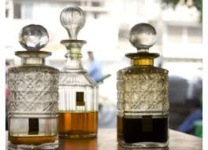 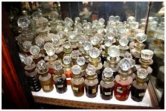 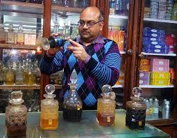 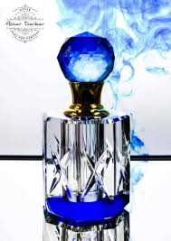
2.EMBROIDERED HANDBAGS
Delhi is a shopper’s joy. When you do decide to visit to Delhi, don’t forget to pick up embroidered designer clutches and also hand-bags. The craftsmen provide the Indian touch to these bags using genuine fine thread embroidery. To make it all jazzy, these artisans take advantage of beads, pearls, and laces to make sure that your bag shines through with and also stands apart in the crowd.
Where to find it?
Shanti Handloom 45, Main Bazar Rd, Ratan Lal Market, Kaseru Walan, Paharganj, New Delhi, Delhi 110055
DUPING :No
RANGE: 200-1000avg
3. MADHUBANI PAINTINGS
Stunning items of elaborate art, Madhubani paintings are an ideal way to decorate a house with Indian patterns, artwork and also colors. They are created with all type of stunning fabric colors which then get painted onto silk, cotton, floral and also all types of various fabrics. The drawings on these paintings are always all type of amazing aspects. They range in everything from Krishna, Ram, Shiva, Durga to all kind of Hindu themes and also animals.
Where to find it?
Kba Gallery in D Park Pandav Nagar, delhi. Kba Gallery. 4.9 ; Artnest in Near CNG Petrol Pump Noida Sector 121, delhi. Artnest.
DUPING: No
PRICE RANGE: 1500-30000 (Depending on the style).
FAMOUS SIGHT-SEEING SPOTS
1.INDIA GATE-open picnic spot looks stunning at night with the fountain displaying coluful lights.morning walk near india gate is amazing.
2.QUTUB MINAR-the second tallest monument of delhi with a height of 72.5 metres(238 ft)
3.LOTUS TEMPLE-it is one of the seven Baha'i house of worship present around the world.known for its stunning white petal lotus architecture.
4.RED FORT-built from red sandstone,it is home to several museums.every year,the indian Prime Minister unfurls the national flag Here on the independence day.
5.GARDEN OF FIVE SENSES-the garden designed to stimulate your senses of touch,sight,smell,sound and taste and is a paradise for nature's lovers.
6.JANTAR MANTAR-compile the astronomical tables and to predict the movement and timings of the sun,moon and planets.
 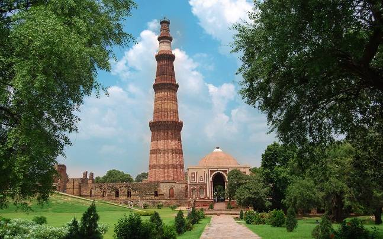
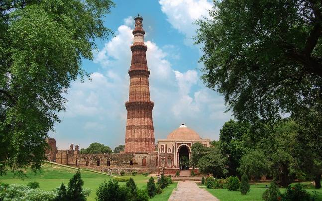
 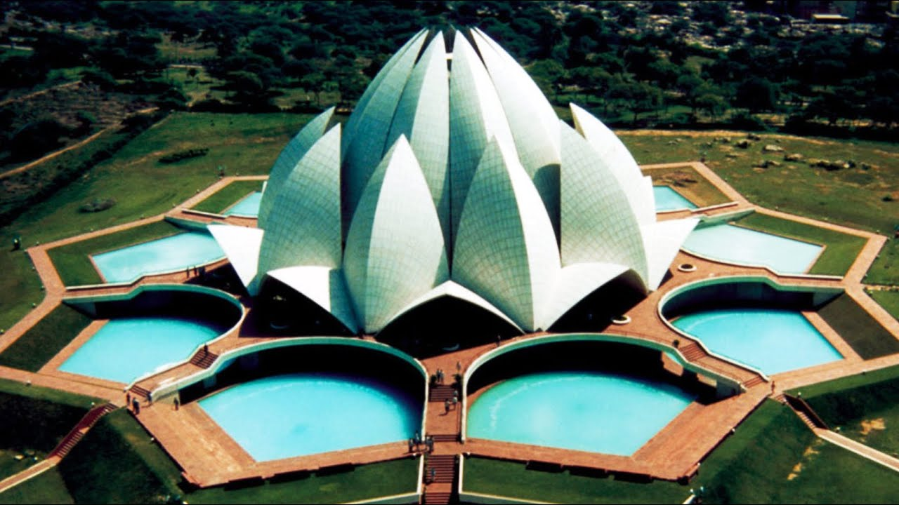
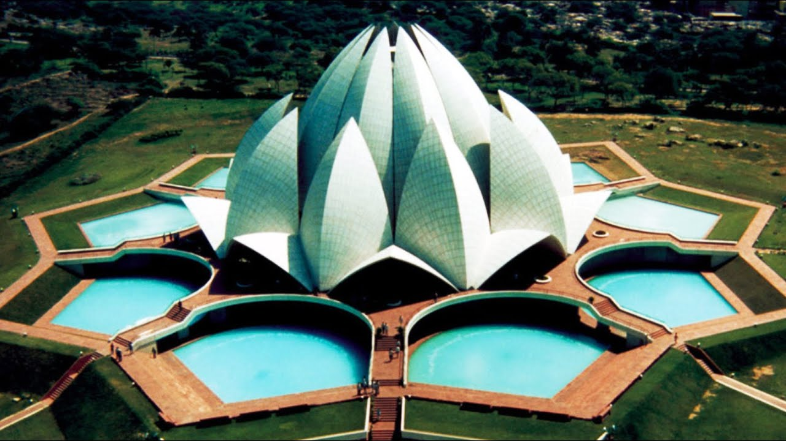

SHOP AND EAT
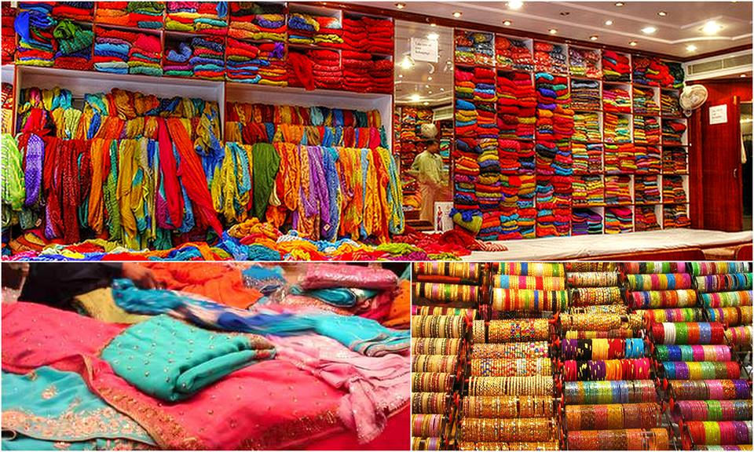 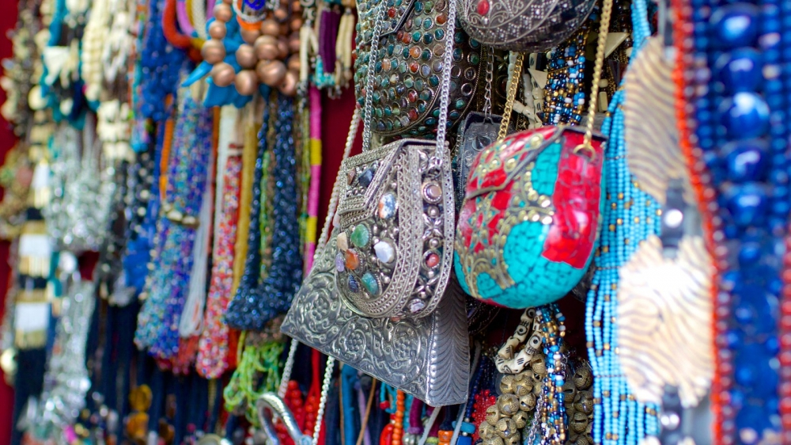 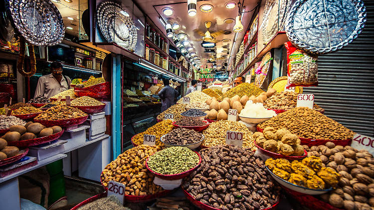
1.CHANDINI CHOWK-one of the most famous shopping cum food hotspots for visitors.from silver items to jewellery,clothing,electronics and bags at really reasonable prices.
2.DILLI HAAT-the stalls have thatched roofs and the overall blend of handicrafts,music and cultural potpourri creates a fantastic ambience.opens at 11am and closes by 10pm.
3.JANPATH MARKET-we can bargain hard to get some fabulous deals at this market offering artifacts,paintings,leather items,imitation jewellery,shoes,barassware items.
4.KHAN MARKET-street side shopping that has several branded stores,book stores along with ayurvedic medicine stores.
TRADITIONAL FOODS
1.GULAB JAMUN
2.PARANTHAS
3.CHAAT
4.BUTTER CHICKEN
5.KEBABS
6.CHOLE BHATURE
7.BIRYANI
8.NIHARI
9.MOMOS
EXPLORE DELHI